這是一本簡單直覺的行動說明書，陪你認識想要記得的人。本文件依 KinCue 1.1.0 整理，涵蓋所有主要功能的使用方式，並標示哪些功能免費即可使用、哪些屬於 KinCue+ 訂閱專屬。
KinCue 是一款幫助你和父母、家人保持聯繫的 iOS App。核心概念很單純：把每一次電話、聚餐、視訊或訊息記錄下來，KinCue 提供你自行設定的聯絡週期，在適當的時間溫柔提醒你該聯繫誰了。
KinCue 不需要註冊帳戶，所有聯絡人資料與互動紀錄都只儲存在你的裝置上，只有在你主動開啟「備份」時，資料才會寫入你自己的私人 iCloud 空間。
想快速比較，App 內「設定 → KinCue+ → 訂閱方案」也有一張表，並提供依你目前方案即時反白。
| 功能 | 免費版 | KinCue+ |
|---|---|---|
| 重要聯絡人數量 | 最多 4 位 | 不限人數 |
| 聯絡週期 | 基本聯絡週期與提醒 | 偏好聯絡時段、需紀念日期、聯絡後追蹤、智慧合併提醒 |
| 互動紀錄（時間線） | ✓ 查看、新增、篩選 | ✓ 與免費版相同 |
| 更懂對方（偏好、禮物、話題） | 基本聊天話題提示 | 完整開放 |
| 回憶相簿 / 回憶影片 | 相簿可用 | 可製作、儲存並分享回憶影片 |
| 日曆檢視 | 月、週、日檢視及篩選 | 同左，並多一組完整統計 |
| 年度回顧 | 基本年度互動次數統計 | 趨勢圖表、跨年比較、精彩時刻、分享 |
| iCloud 備份、Widget、Siri 捷徑 | ✓ 皆可使用 | ✓ 皆可使用 |
第一次開啟 KinCue 時，App 會用幾個畫面快速說明它能幫你做什麼，並依你的節奏完成互動，同時在最後詢問是否允許通知（這樣才能在合適的時機提醒你）。導覽尾聲也會用一張表格，讓你搞清楚免費版與 KinCue+ 差在哪裡——決定要不要訂閱，你也可以選擇「掃過不看」，之後隨時可以在設定裡再訂閱。
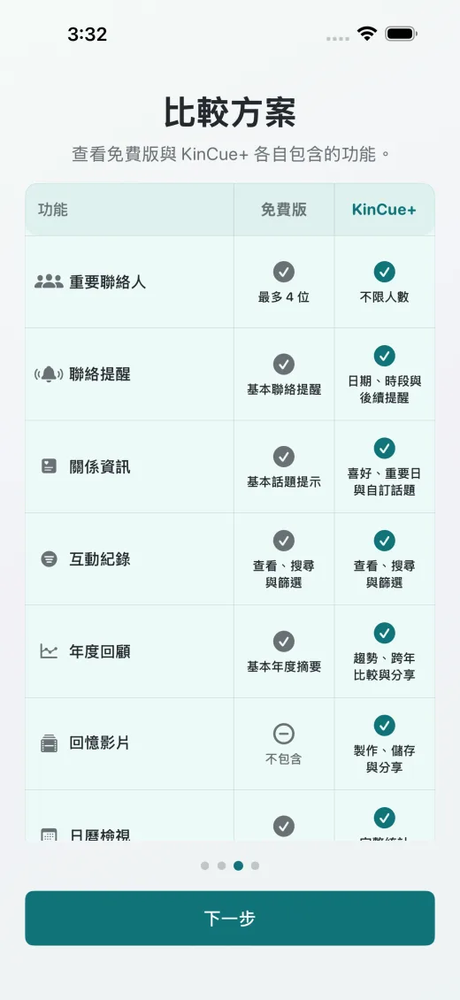
首頁是 KinCue 的預設起點，上方是「今日關係節奏」卡片，用待聯絡、快到了、已更新等數字，讓你一眼看出今天該聯繫誰；下方則是完整聯絡人清單（可依「所有聯絡人」「待聯絡」篩選，並快速切換聯絡週期）。
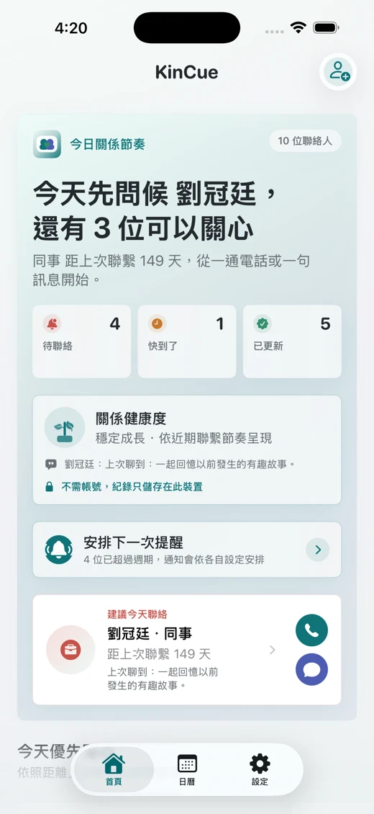
點選首頁右上角的「新增」，輸入姓名、選擇稱謂（媽媽、姐姐、好友……或自訂），可選填電話、訊息收件人、生日與聯絡週期（預設可輸入 1～365 天）。也能直接從手機通訊錄選取聯絡人資料。
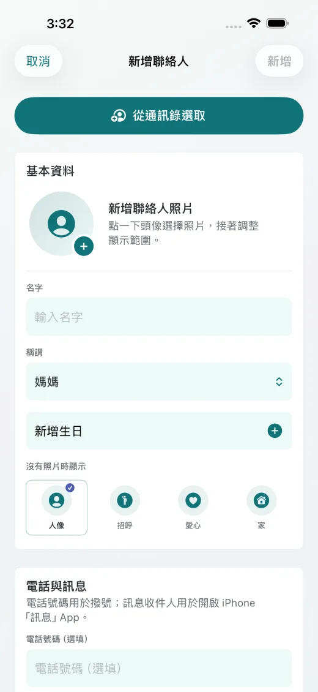
點進任一位聯絡人，會看到基本資料，以及以植物生長比喻呈現的「關係健康度」（例如「枝葉茂盛．連結成長狀態」），下方並列出距上次聯繫天數、提醒週期與互動紀錄筆數。往下可以查看話題提示、互動時間線紀錄，以及「更懂對方」「分享回憶」「同步社群」等擴充功能卡片。
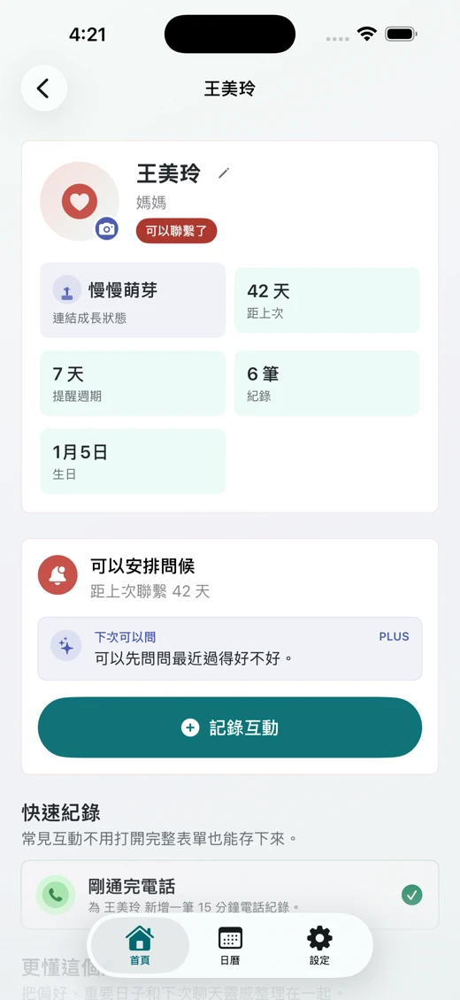
免費版最多可加入 4 位重要聯絡人。加入第 5 位時，App 會直接引導至 KinCue+ 升級頁面，說明「不限人數，只有你最需要的人」。
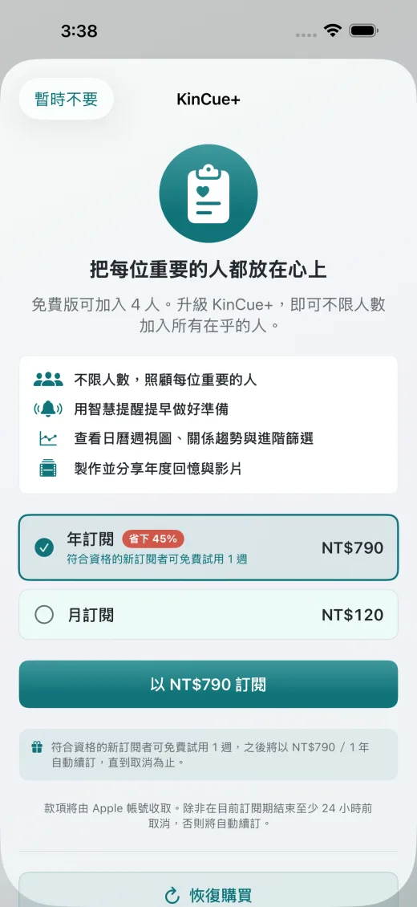
新增、編輯、刪除聯絡人皆可使用（上限 4 位）。
解除人數限制，可加入所有你在乎的人。
在聯絡人詳細頁點「記錄互動」，選擇方式（電話、FaceTime 視訊/語音、實體見面、訊息……），填寫發生時間、結果與備註，也能加入其他家人共同參與。若是接聽或撥打電話，也可以用「快速記錄」，一鍵新增一筆 15 分鐘電話紀錄，不用手動填完整表單。
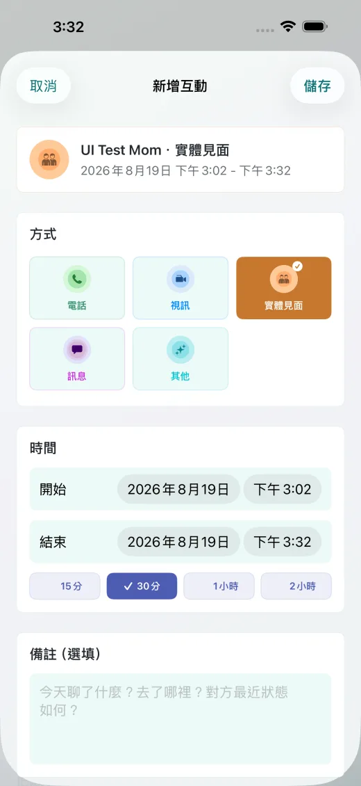
每位聯絡人都有專屬的「互動時間線」，提供時間排序的完整紀錄，並支援依方式、日期範圍、聯繫方式、備註關鍵字篩選，以及分組（依年份、依月分）排序。
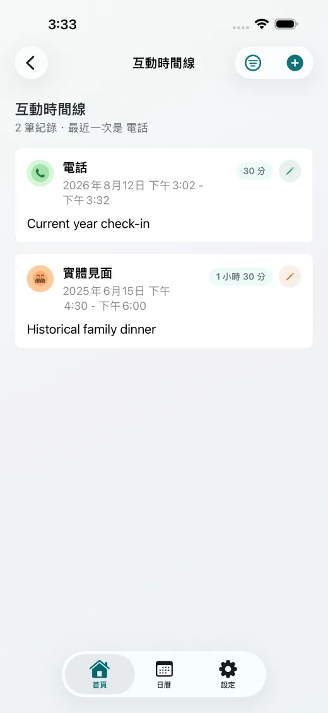
新增、編輯、刪除互動紀錄，以及時間線的查看、搜尋、排序與篩選皆可使用（與 KinCue+ 相同）。
完整開放，與免費版相同。
為每位聯絡人設定「聯絡週期」（例如每 7 天），KinCue 會透過本機通知，在週期到期時當天提醒你「該聯絡了」。系統也預先建立好子女篇、夫妻篇、父母篇的參考週期。
設定 →「KinCue+」→「進階提醒（適合聯絡的時段）」可以：
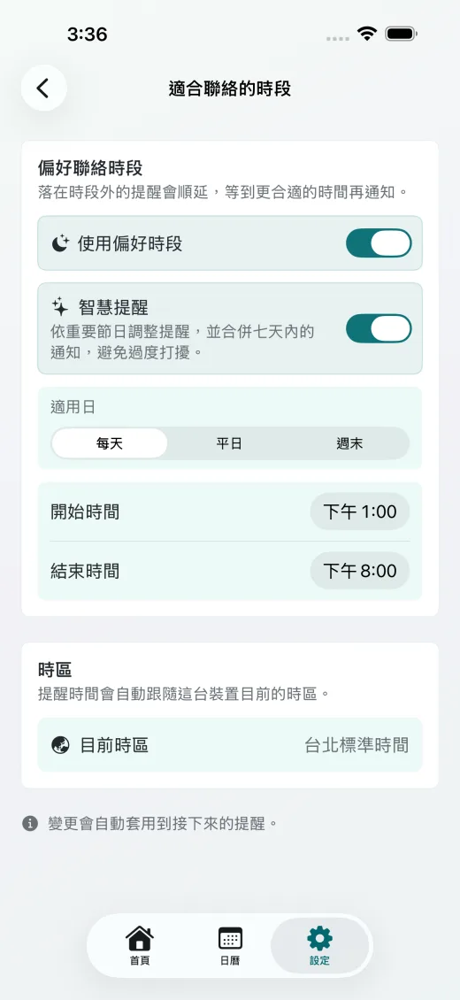
免費版點選進階入口，會直接看到升級提示：
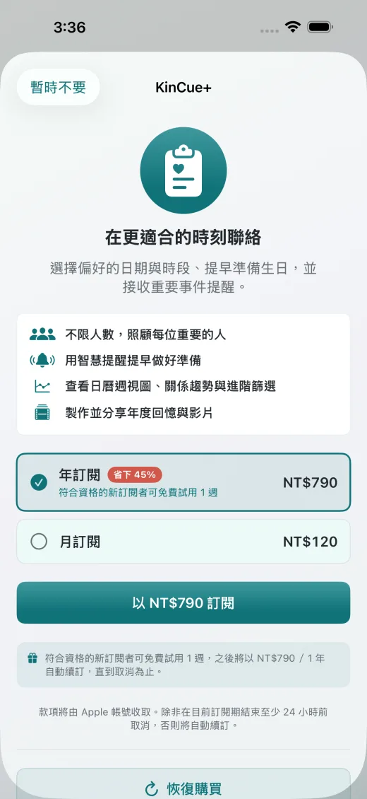
聯絡週期提醒（子女篇、夫妻篇、父母篇）。
偏好聯絡時段、智慧合併提醒、需紀念日提醒、聯絡後提醒。
在聯絡人詳細頁往下滑，會看到「更懂對方」卡片，用來記住那些讓關心更貼心的小細節：
免費版只看得到基本的預設話題提示，並在卡片下方看到升級推廣；KinCue+ 用戶則可以完整編輯這一張卡片。
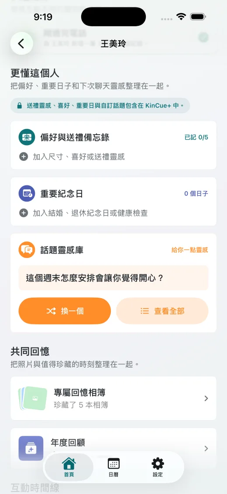
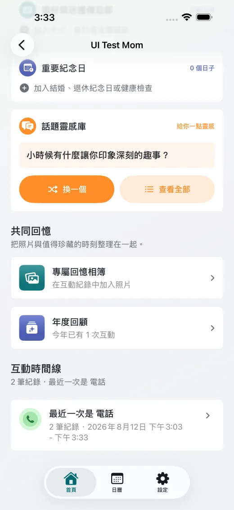
僅顯示基本聊天話題提示。
完整開放偏好與送禮靈感、需紀念日、自訂話題聊天庫。
在互動紀錄中加入照片後，KinCue 會自動整理成該聯絡人的回憶相簿，也可以手動調整相簿名稱、封面與收錄的照片。
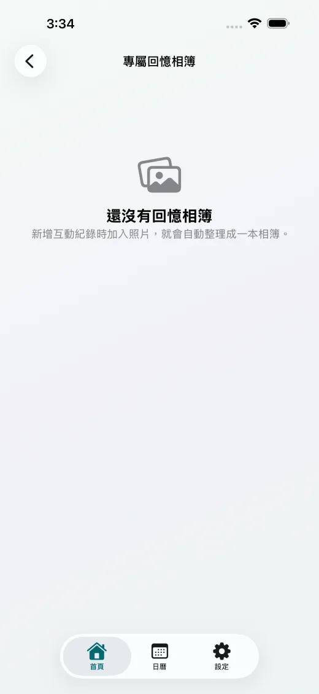
在相簿中點選「製作回憶影片」，最多選擇 15 張照片，選擇主題（溫馨、歡樂、感謝、寧靜）與背景音樂，KinCue 會自動產生一段有轉場效果與文字的短影片，可在影片庫中播放、收藏，並直接儲存到手機分享給家人。影片與音樂皆完全在裝置上產生，不會上傳任何家庭隱私。
回憶相簿的整理、瀏覽、編輯皆可使用。
製作、儲存並分享回憶影片。
日曆分頁可切換月檢視或週檢視，顯示每天的互動紀錄與未來排程，例如即將到期的聯絡週期。點擊日期可直接查看當天新增的互動。
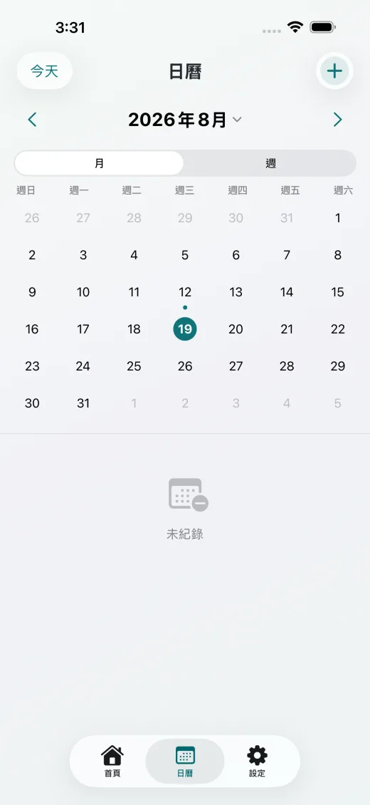
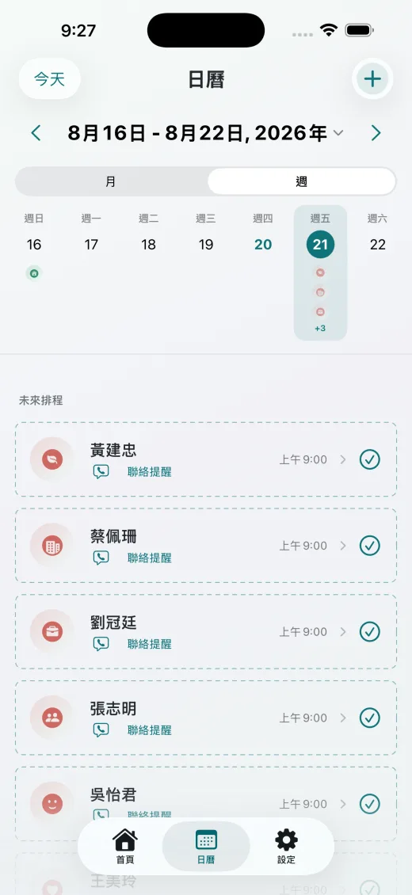
KinCue+ 用戶在日曆右上角會多一組統計指標按鈕，點選可看到「互動總次數」「已聯繫人數」「最常聯繫的人」與依聯繫方式分佈等更完整洞察。
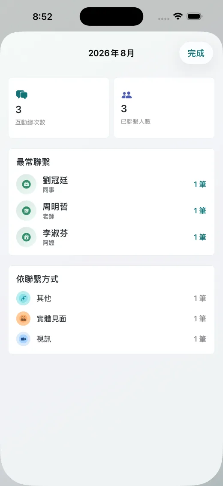
月檢視、週檢視、日檢視皆可使用。
新增完整統計與洞察（互動總覽、常聯繫對象、聯繫方式分佈）。
在聯絡人詳細頁點「年度回顧」，可依年份切換，查看與這個人一整年的互動統計。免費版只看得到基本的年度互動次數統計，並附上一個「解鎖完整年度回顧」的按鈕；KinCue+ 用戶則能解鎖完整年度數據，包含每月互動趨勢圖、跟去年的比較、最常聯繫方式、成長里程碑等年度亮點，以及最近的珍貴時光與時間線，還能選擇要分享哪些內容，做成年份回顧分享出去。
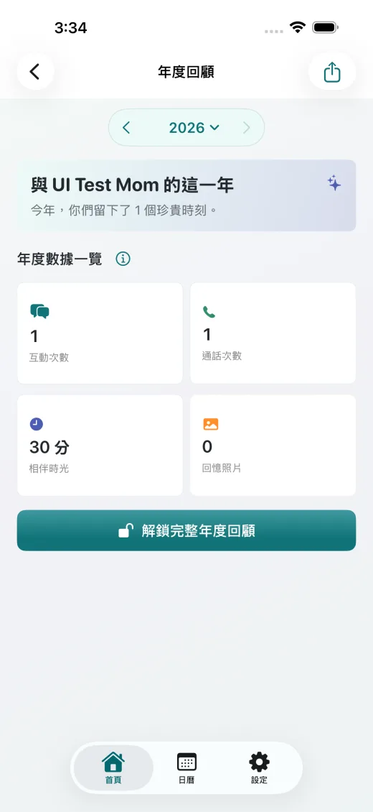
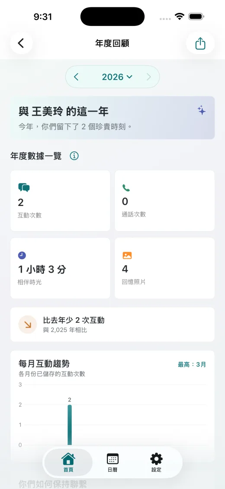
基本年度互動次數統計。
趨勢圖表、跨年比較、年度亮點、時間線與分享。
免費版：小工具與 Siri 捷徑皆可使用，不受 KinCue+ 限制。
點選底部「設定」分頁，可以管理以下項目：
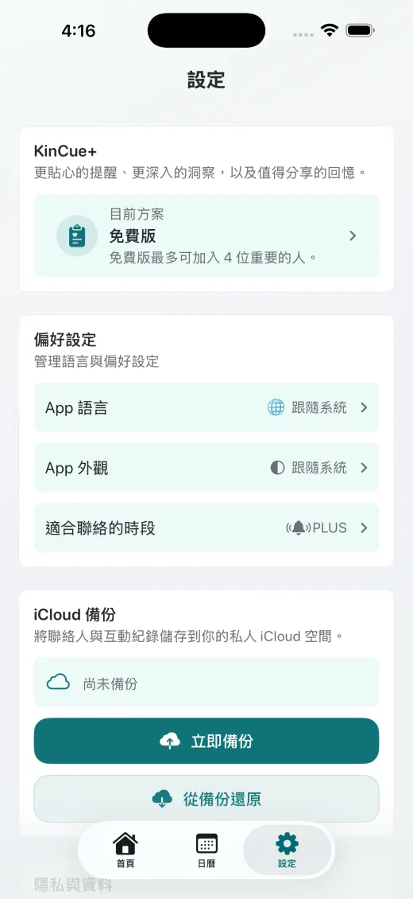
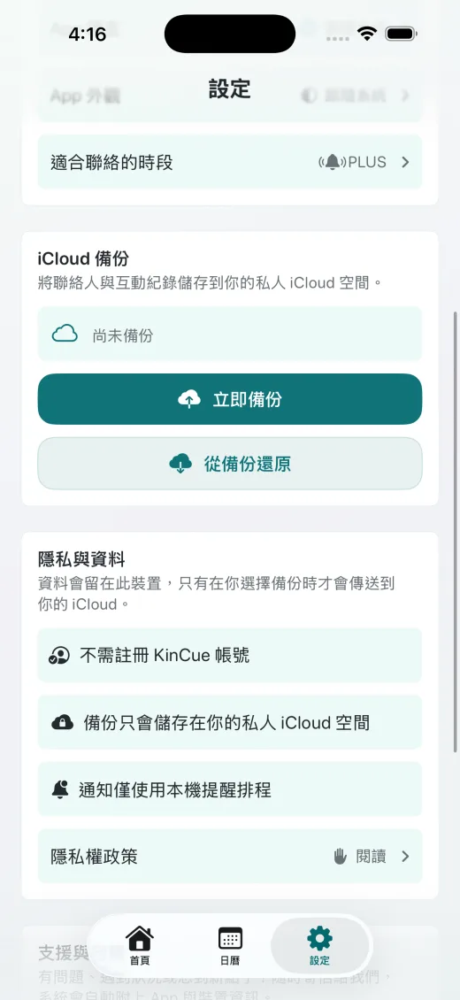
在「設定 → KinCue+」或任何升級提示畫面，都可以進入訂閱中心：
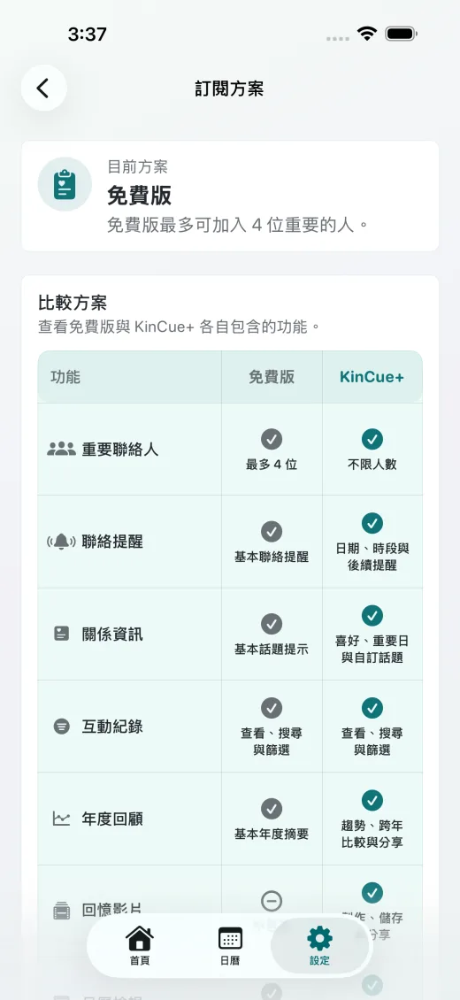
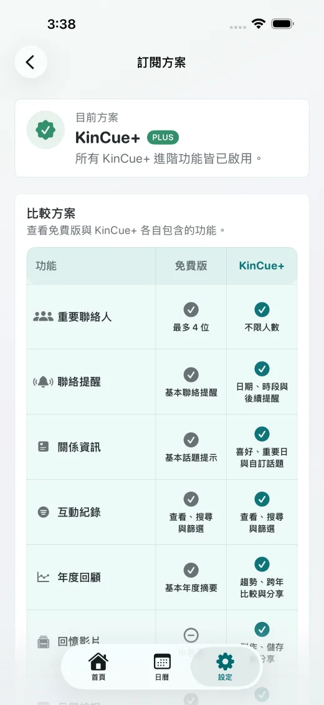
完整條款請見 App 內「設定 → 隱私與資料 → 隱私權政策」，或網站的 隱私權政策 頁面。
本文件內容為 KinCue 1.1.0 的繁體中文介面所寫，實際畫面可能依系統版本而有些微差異。